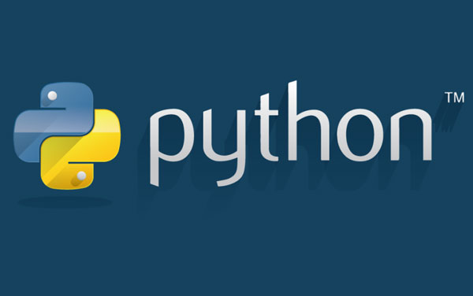
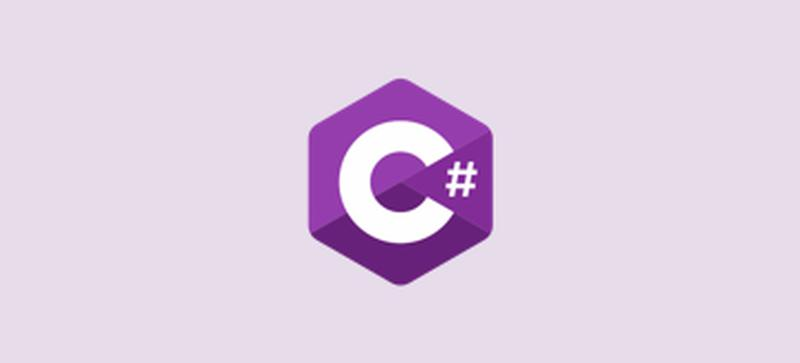
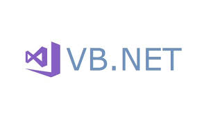
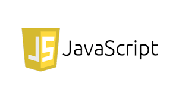

Java

Java es un lenguaje de programación y una plataforma
informática que fue comercializada por primera vez
en 1995 por Sun Microsystems. Hay muchas aplicaciones
y sitios web que no funcionarán, probablemente, a menos
que tengan Java instalado y cada día se crean más. Java
es rápido, seguro y fiable. Desde portátiles hasta
centros de datos, desde consolas para juegos hasta
computadoras avanzadas, desde teléfonos móviles hasta
Internet, Java está en todas partes, si es ejecutado en
una plataforma no tiene que ser recompilado para correr
en otra. Java es, a partir de 2012, uno de los lenguajes
programación más populares en uso, particularmente para
aplicaciones de cliente-servidor de web, con unos diez
millones de usuarios reportados.
Ir la página del lenguaje
C

C es un lenguaje de programación (considerado como uno de lo más importantes en la actualidad) con el cual se desarrollan tanto aplicaciones como sistemas operativos a la vez que forma la base de otros lenguajes más actuales como Java, C++ o C#.
El lenguaje C no es sencillo, por eso recomendamos que se haga una primera aproximación realizando un curso de programación en C para adquirir los conocimientos básicos y poder empezar a trabajar con una base sólida.
Ir la página del lenguaje
Python

Python es un lenguaje de programación interpretado cuya filosofía hace hincapié en la legibilidad de su código.2 Se trata de un lenguaje de programación multiparadigma, ya que soporta orientación a objetos, programación imperativa y, en menor medida, programación funcional. Es un lenguaje interpretado, dinámico y multiplataforma.
Es administrado por la Python Software Foundation. Posee una licencia de código abierto, denominada Python Software Foundation License,3 que es compatible con la Licencia pública general de GNU a partir de la versión 2.1.1, e incompatible en ciertas versiones anteriores.
Ir la página del lenguaje
C#

C# (pronunciado si sharp en inglés) es un lenguaje de programación multiparadigma desarrollado y estandarizado por Microsoft como parte de su plataforma .NET, que después fue aprobado como un estándar por la ECMA (ECMA-334) e ISO (ISO/IEC 23270). C# es uno de los lenguajes de programación diseñados para la infraestructura de lenguaje común.
Su sintaxis básica deriva de C/C++ y utiliza el modelo de objetos de la plataforma .NET, similar al de Java, aunque incluye mejoras derivadas de otros lenguajes.
El nombre C Sharp fue inspirado por el signo ♯, el cual se lee como sharp en inglés para notación musical. Es un juego de palabras, pues '"C#" significa, musicalmente hablando, "do sostenido", donde el símbolo # indica que una nota (en este caso do, representada por C) debe ser un semitono más alta. Esto es una metáfora de la superioridad de C# sobre su antecesor C++ y a su vez hace alusión a la misma metáfora que se ideó para dar nombre a C++.1 Además, el símbolo # puede ser imaginado como la unión de cuatro símbolos +, continuando así con el sentido de progresión de los lenguajes C.
Aunque C# forma parte de la plataforma .NET, esta es una API, mientras que C# es un lenguaje de programación independiente diseñado para generar programas sobre dicha plataforma. Ya existe un compilador implementado que provee el marco Mono - DotGNU, el cual genera programas para distintas plataformas como Windows Microsoft, Unix, Android, iOS, Windows Phone, Mac OS y GNU/Linux.
Ir la página del lenguaje
C++

C++ es un lenguaje de programación diseñado en 1979 por Bjarne Stroustrup. La intención de su creación fue extender al lenguaje de programación C mecanismos que permiten la manipulación de objetos. En ese sentido, desde el punto de vista de los lenguajes orientados a objetos, C++ es un lenguaje híbrido.
Posteriormente se añadieron facilidades de programación genérica, que se sumaron a los paradigmas de programación estructurada y programación orientada a objetos. Por esto se suele decir que el C++ es un lenguaje de programación multiparadigma.
Actualmente existe un estándar, denominado ISO C++, al que se han adherido la mayoría de los fabricantes de compiladores más modernos. Existen también algunos intérpretes, tales como ROOT.
El nombre "C++" fue propuesto por Rick Mascitti en el año 1983, cuando el lenguaje fue utilizado por primera vez fuera de un laboratorio científico. Antes se había usado el nombre "C con clases". En C++, la expresión "C++" significa "incremento de C" y se refiere a que C++ es una extensión de C.
Ir la página del lenguaje
Visual Basic

Visual Basic .NET (VB.NET) es un lenguaje de programación orientado a objetos que se puede considerar una evolución de Visual Basic implementada sobre el framework .NET. Su introducción resultó muy controvertida, ya que debido a cambios significativos en el lenguaje VB.NET no es retro compatible con Visual Basic, pero el manejo de las instrucciones es similar a versiones anteriores de Visual Basic, facilitando así el desarrollo de aplicaciones más avanzadas con herramientas modernas. Para mantener eficacia en el desarrollo de las aplicaciones. La gran mayoría de programadores de VB.NET utilizan el entorno de desarrollo integrado Microsoft Visual Studio en alguna de sus versiones (desde el primer Visual Studio .NET hasta Visual Studio .NET 2019, que es la última versión de Visual Studio para la plataforma .NET), aunque existen otras alternativas, como SharpDevelop (que además es libre).
Al igual que con todos los lenguajes de programación basados en .NET, los programas escritos en VB .NET requieren el Framework .NET o Mono para ejecutarse.
Ir la página del lenguaje
JavaScript

JavaScript es un lenguaje de programación que te permite realizar actividades complejas en una página web — cada vez más una página web hace más cosas que sólo mostrar información estática — como mostrar actualizaciones de contenido en el momento, interactuar con mapas, animaciones gráficas 2D/3D etc. — puedes estar seguro que JavaScript está involucrado. Es la tercera capa del pastel de los estándares en las tecnologías para la web, dos de las cuales son (HTML y CSS), hablaremos de ellas más adelante con más detalle en otra parte de nuestra Área de Aprendizaje.
Ir la página del lenguaje
PHP

PHP es un lenguaje de programación de uso general que se adapta especialmente al desarrollo web.2 Fue creado inicialmente por el programador danés-canadiense Rasmus Lerdorf en 1994.3 En la actualidad, la implementación de referencia de PHP es producida por The PHP Group.4 PHP originalmente significaba Personal Home Page (Página personal), pero ahora significa el inicialismon 1 recursivo PHP: Hypertext Preprocessor.6
El código PHP suele ser procesado en un servidor web por un intérprete PHP implementado como un módulo, un daemon o como un ejecutable de interfaz de entrada común (CGI). En un servidor web, el resultado del código PHP interpretado y ejecutado —que puede ser cualquier tipo de datos, como el HTML generado o datos de imágenes binarias— formaría la totalidad o parte de una respuesta HTTP. Existen diversos sistemas de plantillas, sistemas de gestión de contenidos y frameworks que pueden emplearse para organizar o facilitar la generación de esa respuesta. Por otra parte, PHP puede utilizarse para muchas tareas de programación fuera del contexto de la web, como aplicaciones gráficas autónomas7 y el control de drones.8 También se puede interpretar y ejecutar un código PHP cualquiera a través de una interfaz de línea de comandos (CLI).
Ir la página del lenguaje
swift

Swift es un lenguaje de programación multiparadigma creado por Apple enfocado en el desarrollo de aplicaciones para iOS y macOS. Fue presentado en la WWDC 20147 y está diseñado para integrarse con los Frameworks Cocoa y Cocoa Touch; puede usar cualquier biblioteca programada en Objective-C y llamar a funciones de C. También es posible desarrollar código en Swift compatible con Objective-C bajo ciertas condiciones. Swift tiene la intención de ser un lenguaje seguro, de desarrollo rápido y conciso. Usa el compilador LLVM incluido en Xcode 6. Fue presentado como un lenguaje propietario, pero en el año 2015, con la versión 2.2, pasó a ser de código abierto8 con la Licencia Apache 2.0.
Ir la página del lenguaje
SQL

SQL (por sus siglas en inglés Structured Query Language; en español lenguaje de consulta estructurada) es un lenguaje de dominio específico utilizado en programación, diseñado para administrar, y recuperar información de sistemas de gestión de bases de datos relacionales.1 Una de sus principales características es el manejo del álgebra y el cálculo relacional para efectuar consultas con el fin de recuperar, de forma sencilla, información de bases de datos, así como realizar cambios en ellas.
Originalmente basado en el álgebra relacional y en el cálculo relacional, SQL consiste en un lenguaje de definición de datos, un lenguaje de manipulación de datos y un lenguaje de control de datos. El alcance de SQL incluye la inserción de datos, consultas, actualizaciones y borrado, la creación y modificación de esquemas y el control de acceso a los datos. También el SQL a veces se describe como un lenguaje declarativo, también incluye elementos procesales.
SQL fue uno de los primeros lenguajes comerciales para el modelo relacional de Edgar Frank Codd como se describió en su artículo de investigación de 1970 El modelo relacional de datos para grandes bancos de datos compartidos. A pesar de no adherirse totalmente al modelo relacional descrito por Codd, pasó a ser el lenguaje de base de datos más usado.
Ir la página del lenguaje
Ruby

Ruby es un lenguaje de programación interpretado, reflexivo y orientado a objetos, creado por el programador japonés Yukihiro "Matz" Matsumoto, quien comenzó a trabajar en Ruby en 1993, y lo presentó públicamente en 1995. Combina una sintaxis inspirada en Python y Perl con características de programación orientada a objetos similares a Smalltalk. Comparte también funcionalidad con otros lenguajes de programación como Lisp, Lua, Dylan y CLU. Ruby es un lenguaje de programación interpretado en una sola pasada y su implementación oficial es distribuida bajo una licencia de software libre.
Ir la página del lenguaje